<title>Rigby Results Ledger</title>
<link rel="preconnect" href="https://fonts.googleapis.com">
<link rel="stylesheet" href="https://fonts.googleapis.com/css2?family=Bricolage+Grotesque:opsz,wght@12..96,700;12..96,800&family=Source+Sans+3:ital,wght@0,400;0,600;1,400&family=JetBrains+Mono:wght@400;600&display=swap">
<style>
:root {
  --ground: #eef0f2; --surface: #ffffff; --ink: #1b2128; --muted: #5a6470; --line: #d5dae0;
  --accent: #1f6f8b; --accent-ink: #ffffff; --ok: #3e7d4f; --warn: #b8862b; --bad: #b2402e;
  --humanoid: #1f6f8b; --anyrobot: #7a5c2e; --code: #f4f6f8;
}
@media (prefers-color-scheme: dark) {
  :root:not([data-theme="light"]) {
    --ground: #121619; --surface: #1a2026; --ink: #e5e9ed; --muted: #96a1ac; --line: #2a333c;
    --accent: #5faec9; --accent-ink: #0d1418; --ok: #6db47e; --warn: #d6a84a; --bad: #d9776a;
    --humanoid: #5faec9; --anyrobot: #c9a061; --code: #10151a;
  }
}
:root[data-theme="dark"] {
  --ground: #121619; --surface: #1a2026; --ink: #e5e9ed; --muted: #96a1ac; --line: #2a333c;
  --accent: #5faec9; --accent-ink: #0d1418; --ok: #6db47e; --warn: #d6a84a; --bad: #d9776a;
  --humanoid: #5faec9; --anyrobot: #c9a061; --code: #10151a;
}
* { box-sizing: border-box; }
body { margin: 0; background: var(--ground); color: var(--ink); font-family: "Source Sans 3", "Segoe UI", system-ui, sans-serif; font-size: 16px; line-height: 1.5; }
h1, h2, h3 { font-family: "Bricolage Grotesque", "Segoe UI", system-ui, sans-serif; text-wrap: balance; margin: 0; letter-spacing: -0.01em; }
h1 { font-size: 2.4rem; font-weight: 800; line-height: 1.05; }
h2 { font-size: 1.5rem; font-weight: 700; }
h3 { font-size: 1.15rem; font-weight: 700; }
code, .mono, table.ledger td.num, .facts dd.mono { font-family: "JetBrains Mono", ui-monospace, Consolas, monospace; font-size: 0.86em; }
a { color: var(--accent); }
.page { max-width: 1120px; margin: 0 auto; padding: 32px 24px 80px; display: grid; gap: 40px; }
.masthead { display: grid; gap: 10px; border-bottom: 2px solid var(--ink); padding-bottom: 20px; }
.masthead p { max-width: 68ch; margin: 0; color: var(--muted); }
.stamp { font-family: "JetBrains Mono", monospace; font-size: 0.8rem; color: var(--muted); letter-spacing: 0.02em; }
.eyebrow { font-size: 0.74rem; letter-spacing: 0.12em; text-transform: uppercase; color: var(--muted); font-weight: 600; }
section { display: grid; gap: 16px; }
.wide { overflow-x: auto; }
table.ledger { border-collapse: collapse; width: 100%; font-size: 0.95rem; }
table.ledger th { text-align: left; font-size: 0.74rem; letter-spacing: 0.1em; text-transform: uppercase; color: var(--muted); padding: 6px 10px; border-bottom: 1px solid var(--line); }
table.ledger td { padding: 8px 10px; border-bottom: 1px solid var(--line); vertical-align: top; }
table.ledger td.num { text-align: right; font-variant-numeric: tabular-nums; white-space: nowrap; }
table.ledger tr:hover td { background: color-mix(in srgb, var(--accent) 6%, transparent); }
.pill { display: inline-block; padding: 1px 8px; border-radius: 999px; font-size: 0.74rem; font-weight: 600; letter-spacing: 0.04em; border: 1px solid currentColor; line-height: 1.5; white-space: nowrap; }
.pill.humanoid { color: var(--humanoid); } .pill.any-robot { color: var(--anyrobot); }
.pill.tracked { color: var(--ok); } .pill.untracked { color: var(--warn); } .pill.branch { color: var(--muted); }
.state { display: inline-flex; align-items: center; gap: 6px; }
.state::before { content: ""; width: 9px; height: 9px; border-radius: 50%; background: var(--muted); flex: none; }
.state.ok::before { background: var(--ok); } .state.warn::before { background: var(--warn); } .state.bad::before { background: var(--bad); }
.timeline { width: 100%; height: auto; display: block; }
.timeline .tick { stroke: var(--line); stroke-width: 1; }
.timeline .tick-label, .timeline .row-label { fill: var(--muted); font-family: "JetBrains Mono", monospace; font-size: 11px; }
.timeline .row-label { fill: var(--ink); font-family: "Source Sans 3", system-ui, sans-serif; font-size: 13px; }
.timeline .bar { fill: var(--accent); } .timeline .bar-any-robot { fill: var(--anyrobot); }
.legend { display: flex; gap: 18px; font-size: 0.85rem; color: var(--muted); }
.legend span::before { content: ""; display: inline-block; width: 12px; height: 12px; border-radius: 2px; margin-right: 6px; vertical-align: -1px; }
.legend .humanoid::before { background: var(--humanoid); } .legend .any-robot::before { background: var(--anyrobot); }
.people { display: grid; grid-template-columns: repeat(auto-fit, minmax(300px, 1fr)); gap: 16px; }
.person { background: var(--surface); border: 1px solid var(--line); padding: 18px 20px; display: grid; gap: 8px; align-content: start; }
.person .who { display: flex; justify-content: space-between; align-items: baseline; gap: 12px; }
.person .who span { color: var(--muted); font-size: 0.85rem; }
.person .nums { display: grid; grid-template-columns: auto 1fr; gap: 2px 12px; font-size: 0.9rem; }
.person .nums dt { color: var(--muted); } .person .nums dd { margin: 0; font-variant-numeric: tabular-nums; }
.person p { margin: 4px 0 0; font-size: 0.95rem; }
.set { background: var(--surface); border: 1px solid var(--line); padding: 22px 24px; display: grid; gap: 16px; }
.set header { display: grid; gap: 8px; }
.set .meta { display: flex; flex-wrap: wrap; gap: 8px; align-items: center; font-size: 0.86rem; color: var(--muted); }
.set .meta .who { color: var(--ink); font-weight: 600; }
.facts { display: grid; grid-template-columns: minmax(150px, 190px) 1fr; gap: 6px 16px; margin: 0; font-size: 0.93rem; }
.facts dt { color: var(--muted); } .facts dd { margin: 0; overflow-wrap: anywhere; }
.prose { max-width: 72ch; margin: 0; font-size: 0.95rem; }
.prose + .prose { margin-top: -6px; }
.gallery { display: grid; grid-template-columns: repeat(auto-fill, minmax(240px, 1fr)); gap: 12px; }
.gallery figure { margin: 0; display: grid; gap: 6px; }
.gallery img, .gallery video { width: 100%; height: auto; display: block; background: #000; border: 1px solid var(--line); }
.gallery figcaption { font-family: "JetBrains Mono", monospace; font-size: 0.72rem; color: var(--muted); overflow-wrap: anywhere; }
.gallery figure.wide { grid-column: 1 / -1; }
pre { background: var(--code); border: 1px solid var(--line); padding: 12px 14px; overflow-x: auto; margin: 0; font-size: 0.82rem; line-height: 1.45; }
.resultstable { font-family: "JetBrains Mono", monospace; font-size: 0.78rem; white-space: pre; overflow-x: auto; background: var(--code); border: 1px solid var(--line); padding: 12px 14px; margin: 0; }
.standing { display: grid; gap: 10px; }
.standing li { max-width: 78ch; }
:focus-visible { outline: 2px solid var(--accent); outline-offset: 2px; }
@media (max-width: 640px) { .facts { grid-template-columns: 1fr; } h1 { font-size: 1.9rem; } .page { padding: 20px 14px 60px; } }
@media (prefers-reduced-motion: reduce) { * { scroll-behavior: auto; } }
</style>
<main class="page">
<header class="masthead">
<div class="eyebrow">zanebeeai/rigby &middot; every result set, 7 Aug to 10 Sep 2026</div>
<h1>Rigby Results Ledger</h1>
<p>What the three of us produced, where each set lives, on which code it ran, and the recordings that show it. Six of the nine sets exist only as untracked residue on one machine; this page and the manifest behind it are the record.</p>
<div class="stamp">generated 2026-09-10 from commit 0a3c6e2 &middot; 434,311 files, 27.7 GB on disk &middot; docs/results/manifest.json</div>
</header>
<section><div class="eyebrow">Ledger</div><div class="wide"><table class="ledger">
<thead><tr><th>Period</th><th>Set</th><th>Tier</th><th>Who</th><th>Where</th><th>Files</th><th>Size</th><th>Outcome</th></tr></thead><tbody>
<tr><td class="num">08-07 → 08-12</td><td><a href="#humanoid-runs-aug07-12">Humanoid archive</a></td><td><span class="pill humanoid">humanoid</span></td><td>Zane</td><td><code>rigby-poc/results</code> <span class="pill untracked">untracked</span></td><td class="num">61,102</td><td class="num">12.9 GB</td><td><span class="state ok">985 structurally valid of 1,149 judged</span></td></tr>
<tr><td class="num">08-11 → 08-12</td><td><a href="#humanoid-release-evidence">v2 release evidence</a></td><td><span class="pill humanoid">humanoid</span></td><td>Zane</td><td><code>rigby-poc/artifacts-v2</code> <span class="pill untracked">untracked</span></td><td class="num">197</td><td class="num">68.5 MB</td><td><span class="state ok">12 of 12 release requirements pass</span></td></tr>
<tr><td class="num">08-12 → 08-18</td><td><a href="#mjco-sim-workspace">MuJoCo workspace</a></td><td><span class="pill humanoid">humanoid</span></td><td>Zane</td><td><code>rigby-mjco-sim</code> <span class="pill untracked">untracked</span></td><td class="num">372,396</td><td class="num">14.4 GB</td><td><span class="state warn">parity not measured; superseded by the v2 runtime</span></td></tr>
<tr><td class="num">08-27</td><td><a href="#humanoid-demo-gifs">README demos</a></td><td><span class="pill humanoid">humanoid</span></td><td>Zane, Tony</td><td><code>humanoid/docs/media</code> <span class="pill tracked">tracked</span></td><td class="num">7</td><td class="num">3.2 MB</td><td><span class="state ok">5 demos and 1 before/after, all offline planner</span></td></tr>
<tr><td class="num">08-16 → 09-07</td><td><a href="#humanoid-calibration-evidence">Grader calibration</a></td><td><span class="pill humanoid">humanoid</span></td><td>Tony</td><td><code>humanoid/docs/evidence</code> <span class="pill tracked">tracked</span></td><td class="num">2</td><td class="num">10 kB</td><td><span class="state bad">grader MCC +0.054: not a valid instrument</span></td></tr>
<tr><td class="num">08-24 → 08-27</td><td><a href="#any-robot-zoo-aug24-27">Zoo trials, first pass</a></td><td><span class="pill any-robot">any-robot</span></td><td>Zane</td><td><code>rigby-generalized-urdf/results</code> <span class="pill untracked">untracked</span></td><td class="num">229</td><td class="num">72.7 MB</td><td><span class="state warn">31 of 151 traces accepted</span></td></tr>
<tr><td class="num">08-24 → 08-27</td><td><a href="#any-robot-zoo-demos">Zoo demos</a></td><td><span class="pill any-robot">any-robot</span></td><td>Zane</td><td><code>rigby-generalized-urdf/docs/media</code> <span class="pill untracked">untracked</span></td><td class="num">15</td><td class="num">5.4 MB</td><td><span class="state warn">13 clips on 7 zoo arms; 1 of 5 grasps certified</span></td></tr>
<tr><td class="num">08-27 → 08-28</td><td><a href="#any-robot-environments-aug27-28">Environment trials</a></td><td><span class="pill any-robot">any-robot</span></td><td>Zane</td><td><code>any-robot/results</code> <span class="pill untracked">untracked</span></td><td class="num">363</td><td class="num">208.9 MB</td><td><span class="state warn">78 of 241 traces accepted</span></td></tr>
<tr><td class="num">08-27 → 09-09</td><td><a href="#gripper-milestones">Gripper milestones</a></td><td><span class="pill humanoid">humanoid</span></td><td>Angelo</td><td><code>origin/grasp/auto-lift:rigby-poc</code> <span class="pill branch">branch only</span></td><td class="num">27</td><td class="num">25.3 MB</td><td><span class="state ok">12 of 13 runs placed, worst penetration 0.34 mm</span></td></tr>
</tbody></table></div></section>
<section><div class="eyebrow">When</div>
<svg viewBox="0 0 1000 292" role="img" aria-label="When each result set was produced" class="timeline">
<line x1="190.0" y1="22" x2="190.0" y2="266" class="tick"/>
<text x="190.0" y="282" class="tick-label" text-anchor="middle">7 Aug</text>
<line x1="352.6" y1="22" x2="352.6" y2="266" class="tick"/>
<text x="352.6" y="282" class="tick-label" text-anchor="middle">14 Aug</text>
<line x1="515.3" y1="22" x2="515.3" y2="266" class="tick"/>
<text x="515.3" y="282" class="tick-label" text-anchor="middle">21 Aug</text>
<line x1="677.9" y1="22" x2="677.9" y2="266" class="tick"/>
<text x="677.9" y="282" class="tick-label" text-anchor="middle">28 Aug</text>
<line x1="840.6" y1="22" x2="840.6" y2="266" class="tick"/>
<text x="840.6" y="282" class="tick-label" text-anchor="middle">4 Sep</text>
<text x="180" y="42" class="row-label" text-anchor="end">Humanoid archive</text>
<rect x="190.0" y="32" width="116.2" height="14" rx="2" class="bar bar-humanoid"><title>2026-08-07 to 2026-08-12, Zane</title></rect>
<text x="180" y="68" class="row-label" text-anchor="end">v2 release evidence</text>
<rect x="282.9" y="58" width="23.2" height="14" rx="2" class="bar bar-humanoid"><title>2026-08-11 to 2026-08-12, Zane</title></rect>
<text x="180" y="94" class="row-label" text-anchor="end">MuJoCo workspace</text>
<rect x="306.2" y="84" width="139.4" height="14" rx="2" class="bar bar-humanoid"><title>2026-08-12 to 2026-08-18, Zane</title></rect>
<text x="180" y="120" class="row-label" text-anchor="end">README demos</text>
<rect x="654.7" y="110" width="6.0" height="14" rx="2" class="bar bar-humanoid"><title>2026-08-27, Zane, Tony</title></rect>
<text x="180" y="146" class="row-label" text-anchor="end">Grader calibration</text>
<rect x="399.1" y="136" width="511.2" height="14" rx="2" class="bar bar-humanoid"><title>2026-08-16 to 2026-09-07, Tony</title></rect>
<text x="180" y="172" class="row-label" text-anchor="end">Zoo trials, first pass</text>
<rect x="585.0" y="162" width="69.7" height="14" rx="2" class="bar bar-any-robot"><title>2026-08-24 to 2026-08-27, Zane</title></rect>
<text x="180" y="198" class="row-label" text-anchor="end">Zoo demos</text>
<rect x="585.0" y="188" width="69.7" height="14" rx="2" class="bar bar-any-robot"><title>2026-08-24 to 2026-08-27, Zane</title></rect>
<text x="180" y="224" class="row-label" text-anchor="end">Environment trials</text>
<rect x="654.7" y="214" width="23.2" height="14" rx="2" class="bar bar-any-robot"><title>2026-08-27 to 2026-08-28, Zane</title></rect>
<text x="180" y="250" class="row-label" text-anchor="end">Gripper milestones</text>
<rect x="654.7" y="240" width="302.1" height="14" rx="2" class="bar bar-humanoid"><title>2026-08-27 to 2026-09-09, Angelo</title></rect>
</svg>
<div class="legend"><span class="humanoid">humanoid tier</span><span class="any-robot">any-robot tier</span></div></section>
<section><div class="eyebrow">Who did what</div><h2>Three lines of work, one repository</h2><div class="people">
<article class="person">
<div class="who"><h3>Tony Pan</h3><span>tpypan &middot; 7 Jul to 7 Sep</span></div>
<dl class="nums"><dt>Commits</dt><dd>205 on main</dd><dt>Lines</dt><dd>+139k / -14.7k in humanoid, +514 in core</dd></dl>
<p>The humanoid evaluation stack: the observability tracer, the analysis layer extracted from the compiler, the 47-case golden corpus and its bless tooling, the mutation families, the calibration statistics and the 10f campaign that measured the VLM grader against them, legs in strikes, the rig-derived arm calibration, the test-suite audit, the CI workflow, and in September the grasp solver that places the hand by orientation and carries by FK.</p></article>
<article class="person">
<div class="who"><h3>Zane Beeai</h3><span>zanebeeai &middot; 9 Aug to 10 Sep</span></div>
<dl class="nums"><dt>Commits</dt><dd>55 on main</dd><dt>Lines</dt><dd>+92.7k in humanoid (the v2 runtime), +31k in any-robot</dd></dl>
<p>The original POC and the v2 certified motion runtime, then the any-robot tier: ingest and measured morphology, the grounder, the bake and its gates, the certified primitive library, contact, the development zoo and the bench robots, authored environments and the trials across them, Motion Studio for arbitrary robots, and the September measured-grasp work.</p></article>
<article class="person">
<div class="who"><h3>Angelo Wei</h3><span>AngeloWhey &middot; 25 Aug to 10 Sep</span></div>
<dl class="nums"><dt>Commits</dt><dd>99 on grasp/auto-lift-on-main</dd><dt>Lines</dt><dd>+33.3k / -258 in humanoid, 298 files</dd></dl>
<p>Embodiment truthfulness: the render-contact check, the ROM-grounded body-part vocabulary, joint rate limits and thumb opposition; then the closed-loop decision layer driven by a VLM over super primitives, and the three-segment gripper under computed torque with one wrist camera as its only percept, through pick-and-place to the unfinished cabinet.</p></article>
</div></section>
<section><div class="eyebrow">The sets, in order</div>
<article class="set" id="humanoid-runs-aug07-12"><header>
<div class="meta"><span class="pill humanoid">humanoid</span><span class="pill untracked">untracked residue</span><span class="who">Zane</span><span>2026-08-07 to 2026-08-12</span><span><code>rigby-poc/results</code></span></div>
<h2>Humanoid result archive (rigby-poc/results)</h2>
<div><span class="state ok">985 structurally valid of 1,149 judged</span></div>
</header>
<dl class="facts"><dt>Numbered runs</dt><dd>6,449, ids 000001 to 006447</dd><dt>Planner</dt><dd>compile-only/none (5,447), offline/rule-planner-v1 (589), openai/gpt-5.6-luna (319), offline/rule-planner-v3 (56), openai/gpt-5.6-terra (28), offline/rule-planner-v5 (10)</dd><dt>Compiler versions</dt><dd>rigby-compiler-0.1.0 (5,576), rigby-compiler-0.3.0 (733), rigby-compiler-0.4.0 (109), rigby-compiler-0.2.0 (31)</dd><dt>Verdicts</dt><dd>985 valid, 164 invalid, 5,300 compile-only with no verdict</dd><dt>With exported GLB</dt><dd>6,257</dd><dt>Acceptance runs</dt><dd>20 blinded gesture-review runs</dd><dt>Autonomous goal audit</dt><dd>calibrated_autonomous_judge: pass, gesture_pipeline_smoke: pass, pickup_pipeline_smoke: pass</dd><dt>Named sets</dt><dd>acceptance-runs, capture-lifecycle-smoke, complex-hang-ten-v1, complex-hang-ten-v2, complex-hangten-pilot-v1, complex-hangten-pilot-v2-pronation, complex-hangten-pilot-v3-pronation-safe, complex-hangten-pronation-revision-review, complex-hangten-structural-sweep-v4, dexterous-inspection, flywheel-runs, full-body-smoke, grounded-smoke, handoff-smoke ...</dd><dt>On disk</dt><dd>61,102 files, 12.9 GB, modified 2026-08-07 to 2026-08-12</dd></dl>
<p class="prose"><strong>Produced by.</strong> The humanoid app (`uv run rigby-humanoid`, then `POST /api/v1/pipeline-runs`, or the CLI in `rigby_poc`) writes one immutable six-digit directory per compiled clip: request.json, scene.json, program.json, clip.json, metrics.json, provenance.json, animation.glb. `acceptance-runs/` holds the blinded gesture review runs; `autonomous-goal-audit.json` is the gate summary. See the README inside the directory.</p>
<p class="prose"><strong>Code.</strong> The `rigby-poc` layout that became `humanoid/` on 27 Aug (commit 2d39970). provenance.json records `compiler_version` but not a commit; the compiler versions present date the runs to the 0.1.0 to 0.4.0 compilers of early Aug.</p>
</article>
<article class="set" id="humanoid-release-evidence"><header>
<div class="meta"><span class="pill humanoid">humanoid</span><span class="pill untracked">untracked residue</span><span class="who">Zane</span><span>2026-08-11 to 2026-08-12</span><span><code>rigby-poc/artifacts-v2</code></span></div>
<h2>Humanoid v2 release evidence and benchmarks (rigby-poc/artifacts-v2)</h2>
<div><span class="state ok">12 of 12 release requirements pass</span></div>
</header>
<dl class="facts"><dt>Release requirements</dt><dd>adversarial_benchmark_100 (pass), database_backup_restore (pass), dependency_lock_audit (pass), deterministic_replay (pass), fresh_machine_install (pass), fresh_machine_preflight (pass), license_dataset_review (pass), migration_replay (pass), operator_dry_run (pass), performance_p95 (pass), startup_readiness (pass), wheel_smoke (pass)</dd><dt>Top level</dt><dd>benchmarks, library, objects, release-evidence, supported-communicative-canary, supported-live-model-authority-canary-20260811, supported-live-model-authority-canary-20260811-v2</dd><dt>On disk</dt><dd>197 files, 68.5 MB, modified 2026-08-11 to 2026-08-11</dd></dl>
<p class="prose"><strong>Produced by.</strong> `rigby_v2.release` and `rigby_v2.release_ops` (now under humanoid/src/rigby_v2): each requirement in `release-evidence/manifest.json` is a JSON artefact with its SHA-256. The `supported-live-model-authority-canary-*` runs are the 11 Aug live-model canaries (`run-config.json` names the pipeline id and case ids).</p>
<p class="prose"><strong>Code.</strong> rigby_v2 as tracked by PR 9 (the v2 runtime), pre-rename.</p>
</article>
<article class="set" id="mjco-sim-workspace"><header>
<div class="meta"><span class="pill humanoid">humanoid</span><span class="pill untracked">untracked residue</span><span class="who">Zane</span><span>2026-08-12 to 2026-08-18</span><span><code>rigby-mjco-sim</code></span></div>
<h2>MuJoCo production workspace (rigby-mjco-sim)</h2>
<div><span class="state warn">parity not measured; superseded by the v2 runtime</span></div>
</header>
<dl class="facts"><dt>Experiment folders</dt><dd>73 under artifacts-v2, 12 to 18 Aug</dd><dt>Docs</dt><dd>exact-skinned-dispatch-architecture-v5.md, migration, native-exact-skinned-avatar-sdf-probe-v2.md, native-exact-skinned-avatar-sdf-probe-v3.md, native-exact-skinned-segment-sdf-probe.md, tagged-owner-collision-dispatch-probe-v4.md, v2, visual-parity-audit.json, visual-parity.md</dd><dt>Python files in no commit</dt><dd>1,770 of 1,903</dd><dt>On disk</dt><dd>372,396 files, 14.4 GB, modified 1980-01-01 to 2026-08-18</dd></dl>
<p class="prose"><strong>Produced by.</strong> A standalone workspace (own pyproject and uv.lock) whose README calls it &#x27;the clean local-first Rigby production workspace&#x27;. `artifacts-v2/` holds the button, drawer, bimanual-grasp and calibration-readiness experiments of 13-17 Aug; `docs/` holds the skinned-avatar SDF probes and the visual-parity audit; `visual/generate_demo_media.py` renders the viewer traces.</p>
<p class="prose"><strong>Code.</strong> Its `rigby_v2` package is the ancestor of what PR 9 tracked, but a large part of this tree exists in no commit (counted below). It is not in git history at all.</p>
</article>
<article class="set" id="humanoid-demo-gifs"><header>
<div class="meta"><span class="pill humanoid">humanoid</span><span class="pill tracked">tracked on main</span><span class="who">Zane, Tony</span><span>2026-08-27</span><span><code>humanoid/docs/media</code></span></div>
<h2>Humanoid README demo GIFs (humanoid/docs/media)</h2>
<div><span class="state ok">5 demos and 1 before/after, all offline planner</span></div>
</header>
<dl class="facts"><dt>Compiler commit</dt><dd>d0dbc86 (manifest generated 2026-08-27)</dd><dt>Demos</dt><dd>left-hook.gif: “throw a left hook” (rule-planner-v1, 3.3833 s); right-jab.gif: “throw a right jab” (rule-planner-v1, 3.15 s); step-over-hurdle.gif: “step over the hurdle with your right foot” (rule-planner-v1, 2.55 s); hang-ten.gif: “Throw up a &quot;hang-ten&quot; sign with your right hand, there shoul…” (rule-planner-v1, 2.0405 s); finger-count.gif: “use your right thumb to one by one count each of the fingers…” (rule-planner-v1, 4.3 s)</dd><dt>Comparison</dt><dd>arm-fix-throw-comparison.gif: “throw the block far and high with your right hand”</dd><dt>On disk</dt><dd>7 files, 3.2 MB, modified 2026-08-28 to 2026-08-28</dd></dl>
<div class="gallery">
<figure>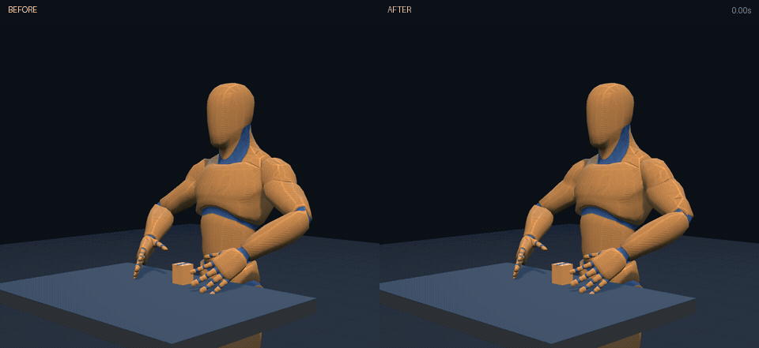<figcaption>arm-fix-throw-comparison.gif</figcaption></figure>
<figure>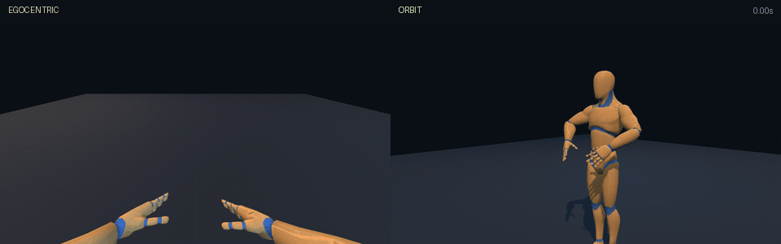<figcaption>finger-count.gif</figcaption></figure>
<figure><figcaption>hang-ten.gif</figcaption></figure>
<figure><figcaption>left-hook.gif</figcaption></figure>
<figure>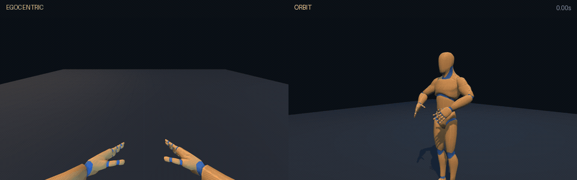<figcaption>right-jab.gif</figcaption></figure>
<figure>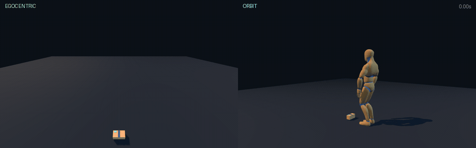<figcaption>step-over-hurdle.gif</figcaption></figure>
</div>
<p class="prose"><strong>Produced by.</strong> `cd humanoid; uv run python -m evals.render_demo_gif &lt;result_id&gt; docs/media/&lt;name&gt;.gif` against a running app on :8000 (8 FPS sample, 480 px ego and orbit panels, 96-colour GIF via FFmpeg). `render_comparison_gif.py` made the before/after strip. `demo-manifest.json` records the result id, prompt, planner and clip length per GIF.</p>
<p class="prose"><strong>Code.</strong> demo-manifest.json says compiler commit d0dbc86 (27 Aug, feat/strike-torso-cross merge).</p>
</article>
<article class="set" id="humanoid-calibration-evidence"><header>
<div class="meta"><span class="pill humanoid">humanoid</span><span class="pill tracked">tracked on main</span><span class="who">Tony</span><span>2026-08-16 to 2026-09-07</span><span><code>humanoid/docs/evidence</code></span></div>
<h2>Judge calibration evidence (humanoid/docs/evidence, humanoid/evals/corpus)</h2>
<div><span class="state bad">grader MCC +0.054: not a valid instrument</span></div>
</header>
<dl class="facts"><dt>Golden corpus</dt><dd>47 cases under humanoid/evals/corpus/cases, blessed per platform</dd><dt>10f campaign</dt><dd>26 Aug, gpt-5.6-luna with gpt-5.6-terra fallback, 1,334 clips scored, $9.41</dd><dt>Accept rate, unmutated</dt><dd>34/41 = 0.829 (majority class 1.000)</dd><dt>Accept rate, mutated</dt><dd>881/1288 = 0.684 (majority class 0.000)</dd><dt>Matthews correlation</dt><dd>+0.054; balanced accuracy 0.573 against 0.500 chance</dd><dt>Verdict</dt><dd>the grader is not a valid instrument on this corpus</dd><dt>On disk</dt><dd>2 files, 10 kB, modified 2026-08-28 to 2026-08-28</dd></dl>
<p class="prose"><strong>Produced by.</strong> `10f-calibration-report.md` and `frozen-judge-calibration.json` come from the calibration campaign driver (`humanoid/evals`, PRs 4, 6, 8 and the 10f2 campaign merge 880735c). The golden corpus under `humanoid/evals/corpus/cases` is blessed by the corpus CLI; `expected.json` per case carries the digest of the blessed clip.</p>
<p class="prose"><strong>Code.</strong> Tracked on main; every change is in git history.</p>
</article>
<article class="set" id="any-robot-zoo-aug24-27"><header>
<div class="meta"><span class="pill any-robot">any-robot</span><span class="pill untracked">untracked residue</span><span class="who">Zane</span><span>2026-08-24 to 2026-08-27</span><span><code>rigby-generalized-urdf/results</code></span></div>
<h2>Any-robot zoo trials, first pass (rigby-generalized-urdf/results)</h2>
<div><span class="state warn">31 of 151 traces accepted</span></div>
</header>
<dl class="facts"><dt>Traces</dt><dd>151: contact_probe 16, prompt 55, environment_trial 80</dd><dt>Accepted</dt><dd>31 accepted, 120 refused</dd><dt>Refusals</dt><dd>object_too_wide (33), unafforded_schema (24), object_out_of_reach (12), grasp_not_achieved (11), object_not_lifted (10), no_gripper (8), object_inside_reach_hole (8), unreachable_object (8)</dd><dt>Robots</dt><dd>uhand2 (20), zoo_jaw_arm (17), kuka_kr6 (15), panda (14), zoo_compact_arm (13), zoo_dual_arm (13), zoo_hand_arm (13), zoo_long_arm (13), eezybotarm_mk1 (5), beetlebot (4), iiwa7 (4), kuka_lwr (4), makerpro_5dof (4), so101 (4), so101_undeclared (4), zoo_tool_arm (4)</dd><dt>Code base tree</dt><dd>rigby_v2@0effceae5518</dd><dt>On disk</dt><dd>229 files, 72.7 MB, modified 2026-08-25 to 2026-08-28</dd></dl>
<p class="prose"><strong>Produced by.</strong> `uv run python scripts/run_trials.py` (every gripper against every authored world), the contact probe in `rigby_general.contact`, and plain prompts through `rigby_general.run`. One `trace.json` per `&lt;robot&gt;--&lt;prompt&gt;` directory.</p>
<p class="prose"><strong>Code.</strong> The `rigby-poc-general` package before it became `any-robot/` (PR 10, PR 12). trace.json provenance hashes the rigby_v2 base tree it ran against (114 files).</p>
</article>
<article class="set" id="any-robot-zoo-demos"><header>
<div class="meta"><span class="pill any-robot">any-robot</span><span class="pill untracked">untracked residue</span><span class="who">Zane</span><span>2026-08-24 to 2026-08-27</span><span><code>rigby-generalized-urdf/docs/media</code></span></div>
<h2>Any-robot zoo demo GIFs and grasp report (rigby-generalized-urdf/docs/media)</h2>
<div><span class="state warn">13 clips on 7 zoo arms; 1 of 5 grasps certified</span></div>
</header>
<dl class="facts"><dt>Clips</dt><dd>12 across zoo_compact_arm, zoo_dual_arm, zoo_hand_arm, zoo_jaw_arm, zoo_long_arm, zoo_tool_arm</dd><dt>Grasp report</dt><dd>5 attempts, 1 certified: zoo_compact_arm: object_not_lifted, excessive_penetration; zoo_dual_arm: object_dropped, excessive_penetration; zoo_hand_arm: grasp_not_achieved, object_dropped; zoo_jaw_arm: object_not_lifted; zoo_long_arm: certified</dd><dt>On disk</dt><dd>15 files, 5.4 MB, modified 2026-08-25 to 2026-08-25</dd></dl>
<div class="gallery">
<figure>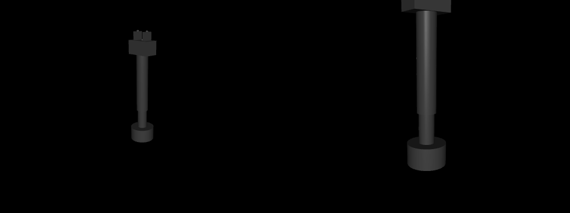<figcaption>zoo_compact_arm-reach-out-as-far-as-you-can-and-then-come-ba.gif</figcaption></figure>
<figure><figcaption>zoo_compact_arm-reach-out-quickly,-just-a-little.gif</figcaption></figure>
<figure>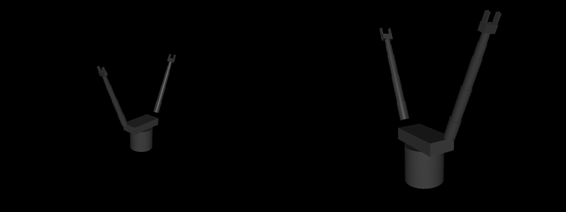<figcaption>zoo_dual_arm-lower-the-tool-down-toward-the-table.gif</figcaption></figure>
<figure><figcaption>zoo_dual_arm-reach-out-as-far-as-you-can-and-then-come-ba.gif</figcaption></figure>
<figure>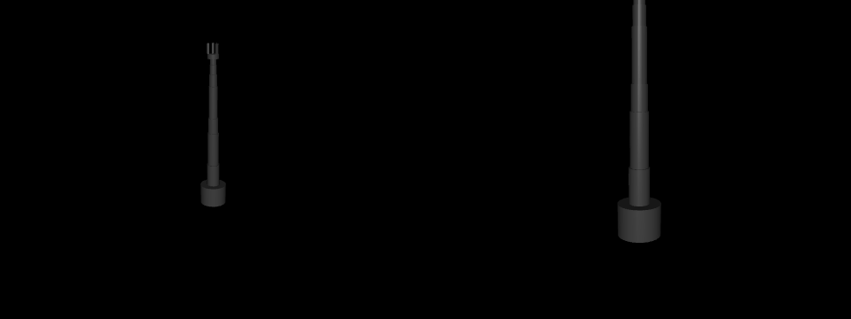<figcaption>zoo_hand_arm-reach-out-as-far-as-you-can-and-then-come-ba.gif</figcaption></figure>
<figure><figcaption>zoo_hand_arm-trace-a-big-circle.gif</figcaption></figure>
<figure>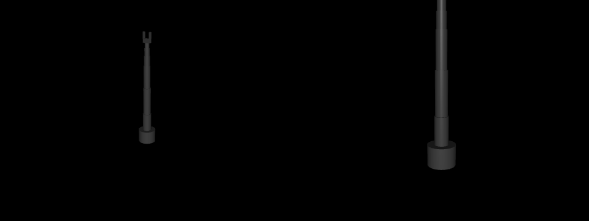<figcaption>zoo_jaw_arm-reach-out-as-far-as-you-can-and-then-come-ba.gif</figcaption></figure>
<figure><figcaption>zoo_jaw_arm-wave-three-times.gif</figcaption></figure>
<figure>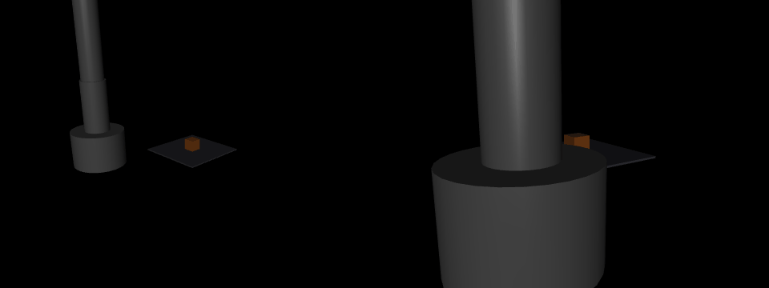<figcaption>zoo_long_arm-pick-up-the-block.gif</figcaption></figure>
<figure>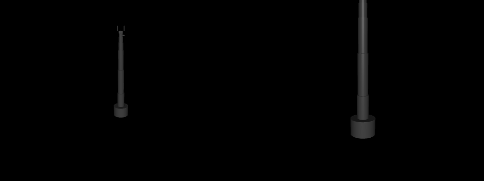<figcaption>zoo_long_arm-reach-out-as-far-as-you-can-and-then-come-ba.gif</figcaption></figure>
<figure><figcaption>zoo_long_arm-sweep-across-the-workspace,-then-hold-still.gif</figcaption></figure>
<figure>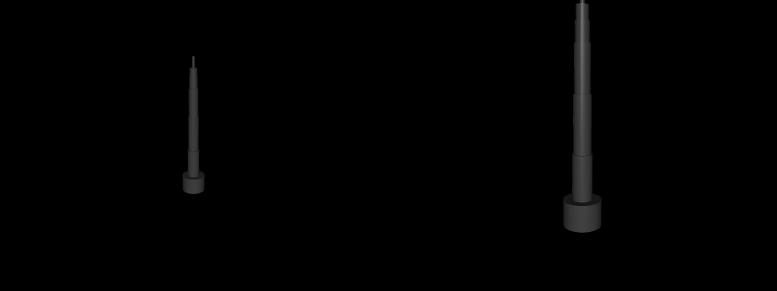<figcaption>zoo_tool_arm-reach-out-as-far-as-you-can-and-then-come-ba.gif</figcaption></figure>
<figure><figcaption>zoo_tool_arm-sweep-slowly-across-in-front-of-you.gif</figcaption></figure>
</div>
<p class="prose"><strong>Produced by.</strong> `uv run python scripts/build_demos.py` renders the same plain-language prompts on several zoo robots and writes `demo-manifest.json` with the role-normalized schema hash beside each clip (one prompt, one meaning, many bodies). `uv run python scripts/grasp_report.py --render` writes `grasp-report.json`.</p>
<p class="prose"><strong>Code.</strong> rigby-poc-general at PR 10 to PR 12; the manifest does not record a commit.</p>
</article>
<article class="set" id="any-robot-environments-aug27-28"><header>
<div class="meta"><span class="pill any-robot">any-robot</span><span class="pill untracked">untracked residue</span><span class="who">Zane</span><span>2026-08-27 to 2026-08-28</span><span><code>any-robot/results</code></span></div>
<h2>Any-robot environment trials and IRL robots (any-robot/results)</h2>
<div><span class="state warn">78 of 241 traces accepted</span></div>
</header>
<dl class="facts"><dt>Traces</dt><dd>241: environment_trial 152, contact_probe 16, prompt 73</dd><dt>Accepted</dt><dd>78 accepted, 163 refused</dd><dt>Refusals</dt><dd>unafforded_schema (32), grasp_not_achieved (24), object_inside_reach_hole (21), unreachable_object (17), object_too_wide (17), object_not_lifted (16), unsupported_morphology (5), object_out_of_reach (5)</dd><dt>Robots</dt><dd>eezybotarm_mk1 (28), zoo_jaw_arm (25), uhand2 (21), kuka_kr6 (17), beetlebot (15), panda (15), so101 (15), so101_undeclared (15), zoo_long_arm (15), iiwa7 (14), kuka_lwr (14), zoo_compact_arm (13), zoo_dual_arm (13), zoo_hand_arm (13), makerpro_5dof (4), zoo_tool_arm (4)</dd><dt>Code base tree</dt><dd>rigby_core@19622b3502d7</dd><dt>On disk</dt><dd>363 files, 208.9 MB, modified 2026-08-28 to 2026-08-28</dd></dl>
<p class="prose"><strong>Produced by.</strong> `uv run python scripts/run_trials.py` over the six authored worlds (bench_jig, desk_bench, far_pallet, pallet_cell, raised_shelf, work_table) after the tier split, plus contact probes and prompts on the bench robots (KUKA KR6/LWR, iiwa7, uHand2, EEZYbotARM MK1, Beetlebot, SO-101). `scripts/build_studio.py` and `scripts/export_viewer.py` render any of them.</p>
<p class="prose"><strong>Code.</strong> any-robot on the feat/environments-and-contact line (PR 12, PR 14, and the six 28 Aug commits merged as PR 21). trace.json provenance hashes the rigby_core base tree (19 files).</p>
</article>
<article class="set" id="gripper-milestones"><header>
<div class="meta"><span class="pill humanoid">humanoid</span><span class="pill branch">on the branch only</span><span class="who">Angelo</span><span>2026-08-27 to 2026-09-09</span><span><code>origin/grasp/auto-lift:rigby-poc</code></span></div>
<h2>Gripper milestones and recordings (Angelo, branch grasp/auto-lift)</h2>
<div><span class="state ok">12 of 13 runs placed, worst penetration 0.34 mm</span></div>
</header>
<dl class="facts"><dt>Branch tip</dt><dd>f00861d 2026-09-10 fix(serve): one BLAS thread, set before numpy loads</dd><dt>Recorded runs</dt><dd>13 complete gripper_clip_v1 recordings under milestones/runs</dd><dt>Sensing</dt><dd>joint encoders, one wrist camera, contact inferred from tracking error; no force sensor, no object pose, no object size</dd></dl>
<div class="gallery">
<figure>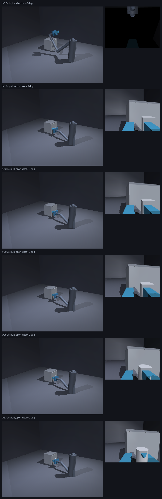<figcaption>fridge-filmstrip.png</figcaption></figure>
<figure>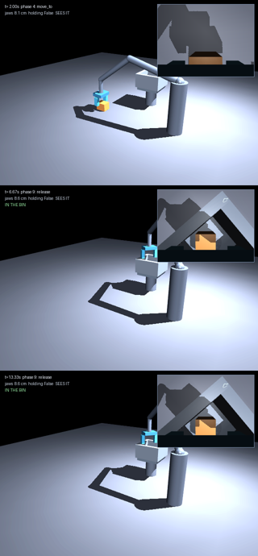<figcaption>two-cam-check.png</figcaption></figure>
<figure>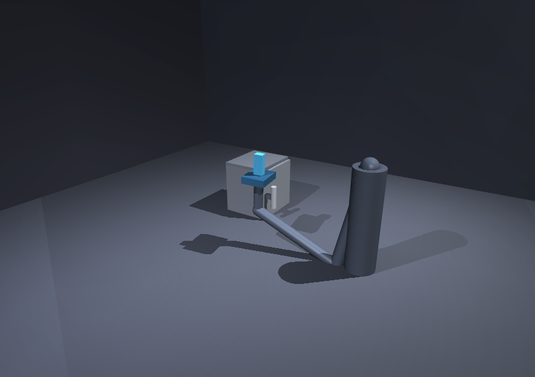<figcaption>view-room.png</figcaption></figure>
<figure><figcaption>view-wrist.png</figcaption></figure>
<figure><figcaption>wrist-view.png</figcaption></figure>
<figure class="wide"><video controls preload="metadata" src="media/gripper-milestones/videos--01-lift-and-place-known-positions.webm"></video><figcaption>01-lift-and-place-known-positions.webm</figcaption></figure>
<figure class="wide"><video controls preload="metadata" src="media/gripper-milestones/videos--02-lift-and-place-camera-only.webm"></video><figcaption>02-lift-and-place-camera-only.webm</figcaption></figure>
<figure class="wide"><video controls preload="metadata" src="media/gripper-milestones/videos--03-cabinet-attempt-not-working.webm"></video><figcaption>03-cabinet-attempt-not-working.webm</figcaption></figure>
<figure class="wide"><video controls preload="metadata" src="media/gripper-milestones/videos--gripper-two-cameras.webm"></video><figcaption>gripper-two-cameras.webm</figcaption></figure>
<figure class="wide"><video controls preload="metadata" src="media/gripper-milestones/videos--gripper-vlm-directed.webm"></video><figcaption>gripper-vlm-directed.webm</figcaption></figure>
</div>
<div class="resultstable">run                             placed    lift_cm   pen_mm  frames
------------------------------------------------------------------
gripper-behind-the-reach        False        0.00    0.000     780
gripper-centre-as-tuned         True        28.86    0.036     780
gripper-far-centred             True        29.73    0.215     780
gripper-left-and-far            True        32.12    0.344     780
gripper-left                    True        28.60    0.265     780
gripper-narrow-block            True        29.28    0.056     780
gripper-near-centred            True        28.58    0.057     780
gripper-off-the-scan-grid       True        28.69    0.316     780
gripper-right-and-near          True        28.94    0.315     780
gripper-right                   True        28.62    0.290     780
gripper-run                     True        28.86    0.036     420
gripper-tall-thin-block         True        25.51    0.034     780
gripper-wide-block              True        28.44    0.047     780</div>
<p class="prose"><strong>Produced by.</strong> Each `milestones/runs/&lt;name&gt;.json` is a complete `gripper_clip_v1` recording (every frame&#x27;s joint poses, link geometry, block pose, contact forces, penetration) from the torque-driven gripper controller in `rigby_poc.gripper` and `rigby_poc.closed_loop`, played by `frontend/public/static/gripper.html?clip=&lt;name&gt;` under `npm run dev --prefix frontend`. The `.webm` files are screen recordings of that viewer; the branch commits no recorder script, so the exact capture settings are Angelo&#x27;s to state. `RESULTS.txt` is the placed/lift/penetration table.</p>
<p class="prose"><strong>Code.</strong> PR 19 (grasp/auto-lift); rebased copy on the new base is grasp/auto-lift-on-main.</p>
</article>
</section>
<section><div class="eyebrow">Where things stand</div><h2>What the ledger says, read as one</h2><ul class="standing">
<li><strong>The humanoid pipeline works end to end</strong> on the offline planner: 985 structurally valid clips, five README demos, twelve release requirements passing. The live-model runs (347 with gpt-5.6) exist but are a minority of the archive.</li>
<li><strong>The VLM grader is not yet an instrument.</strong> Tony's 10f campaign put the number on it: Matthews correlation +0.054 over 1,334 clips. Every acceptance claim that leans on the grader inherits that.</li>
<li><strong>Arbitrary robots reach and sweep; most cannot yet grasp.</strong> 13 zoo clips replay the same words on seven bodies, but only 31 of 151 and then 78 of 241 traces were accepted, and the refusals are the honest kind: too wide, out of reach, not lifted. The September measured-grasp work targets exactly those.</li>
<li><strong>The gripper is the one embodiment with a physically valid grasp on record:</strong> 12 of 13 placements under computed torque with sub-millimetre penetration, 9 of 12 with the wrist camera as the only percept. It lives on a branch, so this ledger carries its recordings until PR 19 lands.</li>
<li><strong>Nothing here can be regenerated byte-for-byte.</strong> The code moved on under every set; the manifest records which line of history each ran on so a re-run can be compared, not matched.</li>
</ul></section>
</main>
